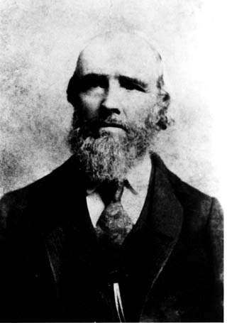
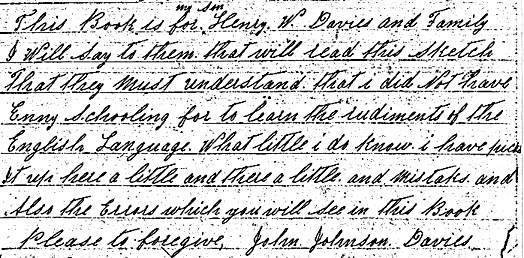

John Johnson Davies

Historical Sketch of My Life. John Johnson Davies (Part 2 - from arrival at Salt Lake City)
(continued from part 1)
In Memory of the Journey
And when we left our Native land
To go west to the promised land
We felt so bad to leave behind
The dearest friends that were so kind.
2
I know that we were glad to see
The waters of the inland sea
And the great city of the west
Where the pilgrims shall have a rest.
- John J. Davies.
My wife's cousin Elizabeth and her husband Rees J. Williams came to see us in camp [Emigration Camp] and we had a good chat together. He said to us, "I want you to come and stay awhile with us." We stayed with them until Christmas time was over. After I rested a few days, I started to work on the new road from the city west to the Jordan Bridge. After this job was done, I worked on the public works. I helped build the Endowment House and also the foundation of that great temple. When I was working here, I had a terrible blow. One of the large blocks of rock slipped down to the foundation and struck one of the levers and it came in such a force and struck me on the side of my head, senseless to the ground. The brethren administered to me and I got better. The superintendent of the work was Brother Daniel H. Wells.
Now I will say a word about the fight. It was in the winter of 1854 on Christmas morning between the Mormon boys and Colonel Steptoa's soldiers. I was right there at the time. It was getting quite rough before they quit. President Young sent Brother Orson Hyde to stop it and it was lucky that it was stopped because it was getting quite rough. The boys did as they were told and peace was restored. The work on the public works stopped at Christmas time. Then I worked at my trade to Sister McKeny in the Eleventh Ward. I worked for her until April Conference in 1855. Sister McKeny and myself and wife went to meeting held in the Tabernacle on Sunday in a carriage. This was a great honor to us. I wove that winter five hundred yards of carpet for the use of the tabernacle. After the April Conference was over, I went to North Ogden to live. The first Sunday I was here, the Bishop, Brother Thomas Dun, set me apart to lead the singing and to organize a singing class, and so I did. Before I left North Ogden we had a good choir.
Now I will say a few words about the grasshopper war. They destroyed nearly all the crops in the northern settlements and breadstuff was very scarce. Many had to dig roots to sustain life. I had to do that myself. I went to the field to water my corn one day and I got very weak and started for home. When I got to the door of the house I met my little daughter Martha and she asked for some bread and butter. There was no bread in the house. This was a trying time, you bet. I took a sack and started out and said, "I'll have some flour before I'll come back." I went to mother Marler. All she had in the house was twenty pounds of flour and one loaf of bread. She gave me half of what she had in the house. When I got home my wife smiled. Then we had a good breakfast. I wove one hundred yards of cloth for her son-in-law, Brother Baily Lake. He paid me in flour. Then I had flour to do me until fall. He was killed by the Indians on his way home from his Salmon River Mission. This was in the Spring of 1858.
When I started to America in the year 1854, I left my mother in Wales. In the month of October 1856, two years after I left Wales, my mother died. This, my friends, was indeed sorrowful news to me.
A Few Lines to Her Memory
It was a task to me that day
To give my mother the last good-bye
She reached her hand and I did mine
Oh what a feeling I had that time.
- her son John
Now I will say a word or two about that great feast we had after the famine. It was on the 24th of July 1856. We had bread made from the wheat that grew this year. And we had all kinds of vegetables that grew this year and I can say, my friends, that this was a feast in reality. We enjoyed ourselves well and a more jovial crowd you've never seen. The winter of 1856 & '57 was exceedingly severe in Utah. Snow fell to the depth of eight feet at various places in the valleys. I will never forget that winter. The snow was six feet deep in North Ogden.
The great move to the south from the North in the beginning of 1857 - Judge W. W. Drummond having returned to the state, raised a great excitement by representing that the people of Utah were in open rebellion against the Government. On the 24th of July, Brother J. L. Stoddard arrived from Independence, Missouri without the Mail for Utah. He also brought the news that General Harney with a force of two or three thousand soldiers was sent to Utah to suppress the Mormons. As the army approached, about 1,500 of the territorial militia was sent to check their progress on the road. Some successful raids were made on teams and cattle herds, without shedding of blood. The army concluded to winter at Fort Bridger, 115 miles from Salt Lake City.
The Truth
Awake ye nations of the earth
And listen to the words of truth
The time will come when you will say
The men of God have gone away
2
I know that time will surely come
When God will call the Elders home
The people then will mourn and say
Why didn't God's servants with us stay
3
Because you did not listen to
Those Elders that were sent to you
For they did preach the plan that's given
By the great God that dwells in heaven
4
These Elders were despised by men
When preaching words of truth to them
And now a change had come at last
For prejudice is dying fast.
- J. J. Davies
Early in the spring of 1858 President Young told the Latter-day Saints that salvation of the Saints was in moving south and towards the latter part of March, the people began to evacuate Salt Lake City and the entire country north of Utah Valley. President Buchanan sent peace commissioners. They and the leaders of the Saints arrived at a peaceable treaty and the army entered Salt Lake City. They remained at Camp Floyd until the autumn of 1861. It returned to take part in the contest between the North and South, Camp Floyd was broken up. Instead of a curse to the people, the army was a great blessing to us in supplying many of our necessities at a very low rate. The prophet of God said that the Lord accepted the sacrifice of the people and he said that the Lord would bless them for it and I can bear my testimony that the Lord did bless us just as he said. I never forget seeing women and children as well as men who were destitute of teams pulling handcarts through the storm of snow. Indeed it was a sublime exhibition of faith of the Latter-day Saints and when traveling south the time of the move, the people had teams and wagons of all description. The best team to my fancy was three yokes of yearlings. Indeed they did look pretty. I went as far as Spanish Fork and stayed there one year and went back to my home in the north in the fall of 1859. We as a people were blessed after the move, although it was a great sacrifice for us.
Their Just Due
Some people, they think they know it all
And others, they'll say know nothing at all
But this is not right for me and for you
Then let us give all what is their just due.
2
And here I will say to you and to me
Yes, let us be kind to all that we see
And also be true and do what is best
When we'll be happy and we shall be blest.
-- The old man Davies
I bought a city lot in Spanish Fork when I was there, the time of the move, and made quite a sum of money off my garden truck that summer, sold to the peddlers. They took them to Camp Floyd. I worked in this camp in the fall. I did not have a team of my own the time of the move. I bought a yoke of cattle and a wagon and started back to my old home in the north in the fall of 1859. In the year of 1864 I left North Ogden to go to Kanarra, Iron County. We started on the 5th of November. We got to Salt Lake City and while we were there we had a snow storm. We went from there to Leigh [Lehi?] and stayed with my Uncle Thomas Davies two days. We started again and got to Spanish Fork and stayed with my nephew Albert Rees. We traveled a few days more and got to Wales, Sanpete County, on the last day of November and stayed for the winter with my brother in law Thomas Rees. Brother John Rees, the president of the place, said "I want you to learn the folks to sing and organize a class." So I went to work and they learned very fast and in a short time we had pretty good singing. Brother Orson Hyde, one of the Twelve Apostles, lived in Spring Town, Sanpete. He said, "I want you, Brother Davies to take your choir to visit the settlements of Sanpete and sing for them to cheer them up." The first place we went to was the city of Manti. We gave them a concert and a dance on New Year's night 1865. Brother James Davies and wife were with us here at this place. They were going back home to Kanarra. We did not visit all the settlements because I was taken sick.
After the Latter-day Saints located in these mountains, they had peace for a few years and since then there has been many men that have tried their best to enact laws to persecute the Saints and to drive them from these mountains, but President Kimball said that they will never drive the Latter-day Saints from these mountains and I am foolish enough to believe it. I have the names of a few of them in these few lines.
Uncle Sam and the Mormons
Yes Uncle Sam, he's trying his best
to drive the Mormons from the West
I hope that we shall stand the test
Brigham at the head
[chorus]
Sing, sing, let us sing
Brigham Young shall be our king
Sing, sing, let us sing
Sing, for the priesthood, sing.
[2]
Colface, he was in a fret
When he was here in Deseret
He said the Mormons we'll upset
Brigham ain't the man
[3]
Yes, Cragin thought that he was wise
Yes, Mormonism he despised
But he with all others lies
About the Mormon boys
[4]
Bill Collum also with the rest
Said in Congress he knew best
We'll rout the Mormons from the West
Brigham ain't the man
[5]
The editors, they've tried their best
To publish lies on Deseret
And some of them proclaimed "We'll fight
Brigham at the head"
[6]
Sectarians, they do all they can
To stop the Savior's glorious plan
But Mormonism yet goes on
Brigham is the man
[7]
They say that we are awful set
Away out here in Deseret
But we don't care and let them sweat
Brigham is the man
[8]
Minister Foot I understand
Is coming back to the Mormon land
With twenty thousand dollars on hand
To civilize the Saints
[9]
Minister Foot must be a fool
To think the Mormons he can rule
And we don't want his gentile school.
We can do without them.
[10]
The next comes in is Judge McKeen
He thought the Saints were very green
He soon found out a different scene
Brigham is the man.
[11]
And Doctor Newman came to test
Plural marriage in Deseret
Bur Orson Pratt made him to sweat
Orson was the man
[12]
Prince Edmunds thought that he done well
His proclamation he did tell
He must repent or go to hell
Brigham is the man
[13]
Come faithful saints and be on hand
To obey the Lord's command
That we may go on hand in hand
Brigham is the man
[14]
My friends, the truth I must unfold
That Brigham Young was called of God
As Abraham in days of old
God is at the Helm
- composed in 1870 by John J. Davies
It was in the spring of 1865 that the Sevier Valley was commenced to be settled, and my brother in law Thomas Rees and two of his boys and myself went to that valley to take up land. We took up land in Monroe, but the Indians drove me away and in the month of July 1865, a young man by the name of David Wilson and myself started from Monroe and crossed the Beaver Mountains to go to Kanarra. We had a very hard trip of it, only one yoke of cattle. We had three hills to climb up and in one place we had to leave everything at the bottom of the hill. We took the four wheels half way up the hill and took two on top, came back and took the other two on top and took the wagon bed apart and took it up a board at a time and everything we had along, we packed them on top. We suffered for water a great deal, also the cattle, and we were badly used up before we got to water. We got to a spring of water at sun down. The next day, we got to the Beaver road and we were glad to get there. We got to Kanarra on the 21st of July. This trail that we traveled on was made by that great explorer, William Fremont in 1853. Most all of his animals died by starvation and some of his men died. He was snowed in. He got to Parowan on the 7th of January, 1854, a settlement of the Saints which was settled by Brother George A. Smith and party in 1851
My brother in law, James Davies, lived in Kanarra. He took me to Pinto Creek to spend the 24th of July. On the 26th, we started back home. We got there on the 3rd of August. My wife was glad to see me because the Indians were hostile in those days. It was in this year the Black Hawk War commenced. They stole hundreds of horses and cattle from Sanpete and Sevier Counties and many of the brethren were killed. This was one of the trials that the Latter-day Saints have seen in the valleys of the mountains.
Poets of today
The poets of today make beautiful rhymes
Some of their writings are truly sublime
Also they give us some grand sentiments
And the poems they make, they are excellent.
2
How grand are the hymns that the poet makes
They gladden the hearts and the human race
And when they're sung in a religious meeting
The words and music to us are pleasing
3
Some men will say they are not so great
The poems that they to us repeat
Indeed those men do not appreciate
The wisdom that they to us relate
4
I take great pleasure in reading poetry
And also to read some good history
They give me comfort in my lonesome hours
Enlightens my mind and gives me pleasures
5
And now my friends I'll quit my nonsense
And leave the field to men of science
But I want you all to understand
That I've poor language at my command.
- J. J. Davies
On the first of November 1866, I left the Sevier county with one yoke of cattle and one cow and a wagon and started for Kanarra, Iron County. We traveled through a few settlements and got to Kanarra on the 25th. We stayed with my uncle's folks, William R. Davies and in the spring of 1867 the place was moved one mile south. It was moved by the orders of Brother Erastus Snow, one of the Twelve Apostles. I bought me a farm in this place with Brother Llewelling Harris. Here again I organized a choir and one in Harmony, a settlement eight miles from Kanarra.
On the night of the 16th of May 1869, my wife was taken sick and at four o'clock in the morning. She gave birth to a daughter and at seven o'clock, she died. This was the most trying circumstance that ever came across me in my life. It is impossible for me to express my feelings I had at that time. I thought there was no more happiness for me any more on this earth, but there was one thing that gave me joy and satisfaction. I knew that she died in full faith in the Gospel of Jesus. She was a good woman and a kind wife and good mother. She embraced the Gospel the first time in 1846. She was a faithful Latter-day Saint and she died in peace in my arms. The babe was taken care of by Sister Ann Young and she was a good mother to the child. My wife was buried on the 18th of May. She was a mother of eight children. I buried two children at North Ogden. I did all I could for to provide for six children that were left with me. The oldest was fourteen years old. Her name is Martha Mariah and she did very well to help me with the children.
In Memory of My Departed Wife
Ho what a feeling, I had just then
To see that my dearest friend was gone
And to think that I was here alone
With six children and myself to mourn
2
She was a good mother and a friend
Who was ready to help and also kind
Yes, to all her children and to me.
Ho what sorrowful time for us to see.
- the old man
In the spring of 1873, the United Order commenced in Kanarra. The brethren and sisters were organized by Bishop Lorenzo W. Roundy and his counselors A. B. Griffin and J. H. Willis, sen. We worked faithfully all summer. A. B. Griffin was the superintendent of the farms and John J. Davies the superintendent of the gardens. In the fall it was discontinued, not because it wasn't right. No, I believe it will be established in the Church of Jesus Christ yet, because the revelation of the Prophet Joseph Smith will yet come to pass. In the month of October, I was sent to herd the sheep of the United Order on Kanarra Mountain. I took John H. my son with me. It is very pleasant to be on the mountains in the summer and fall, to breathe that pure air that floats in the air and to drink that pure water that flows from the living springs. While I was there these lines came to me:
The Wolves on the Mountains
The wolves around were bad one night.
They tried and tried with all their might
And in the morning before 'twas day
The wolves were hunting for their prey.
2
And here they came, the sheep they found
All lying quiet on the ground
And then they thought to have a treat
And tried to catch one for to eat.
3
Then Johnny in the door did yell
And I ran out through the corral.
I found the sheep and went around.
The wolves then had to leave the ground.
4
I got the sheep, then quiet and still
Close to the house on the side hill
Then to the house I steered my way
Here I found Johnny busy at play.
- J. J. D.
On the 25th of July 1870, I got married to Elizabeth Williams, a cousin to the wife that I have buried. In the spring of 1871 I was taken sick with a pain in my breast. I was sick for three weeks. On the 12th of May 1872, my wife gave birth to a son at 2 o'clock in the afternoon at Kanarra. In the latter part of August 1890, my wife was taken sick and she died on the 27th of September 1890 of quick consumption, once again a gloomy day for me. She had five children when she died, and six of mine by the first wife.
In Memory of My Departed Wife
And now once more my sorrow has come
And ho, how gloomy tis here at home
For my wife has gone to her heavenly rest
To mingle with friends and also the just.
2
She has left five children of her own
And six of mine all here for to mourn.
After a good mother and a friend
And she's gone and left us here behind.
- husband J. J. Davies
My children are grown up and I am getting feeble, so I came to the conclusion to sell my place in Kanarra. I lived with my son, Henry, after I buried my wife, until the month of July 1891. In the month of January 1891, I was taken sick with the la grip. I was sick for a long time and got very weak. I thought by traveling a little I would gain more strength. On the 8th of July, I started from Kanarra and three of my sons went along with me to Cannonville. I had a few head of cattle to take with us. The first night we camped at Cedar City. We rolled next morning and got to Paragonah that night. Next morning we started again. We went up through Little Creek Canyon and to Bear Valley and camped for the night. This is a fine country to keep stock in summer. Now we are on the go again and got to Panguitch in the afternoon. This is a desolate looking place, but still there is a great deal of business going on in this place. We went a little further and camped at Perkins Springs for the night. We started again, and after traveling two miles, we got to Red Canyon. This is a fine looking canyon, nice looking trees and fine scenery. It is five miles long, gradually up hill. We got on top safe, now we are on the East Fork Mountain, a fine looking country it is. We camped for noon at the East Fork Bridge. We got some fish for dinner and after dinner we rolled again and came to the head of the Cannonville Canyon. That leads down to the valley of Cannonville. We got to my son John's place on the 12th of July. We found my son and family all well. The distance from Kanarra to Cannonville is 104 miles.
The Great Prophet
The Prophet Joseph was a mighty man
And God through him revealed the glorious plan
For the Jews and Gentiles, yes, bond and free
Those grand principles of eternity.
2
He was chosen in the Council of Heaven
To come forth in this last dispensation
For to receive and also to restore
The gospel that was preached in days of yore.
3
Indeed this prophet of the latter days
Suffered persecution in different ways.
He was hunted and mobbed and put in prison
But was protected by the God of Heaven.
4
This great prophet was true and brave
Until he was laid down in the grave.
He sealed his testimony with his blood
Just the same as the prophets did of old.
- John J. Davies
After I came to Cannonville, I thought I would take a long rest, but the old saying is "there's no rest for the wicked". I guess I am one of them, be that as it may, and here comes traveling again. John H. and part of his family, my son David and myself started for Panguitch Lake on the 22nd of July. We got to the lake on the 23rd. This is a good place to spend the 24th. We had a pleasant time while we were there and on the 26th, we started back home. We got to Cannonville next day. On the 28th we had a very heavy rain storm and a big flood in the creek. Now for a trip to Escalante to see Brother Roundy's folks. My son David and myself started on the 30th of July, 1891. We stayed in Henryville that night with Brother Paterson Willis. We got to Escalante next day. The road was very bad. We found Brother Roundy and his family all well and they were glad to see us. This is a nice place and good shade trees. Now for a trip on the Escalante Mountain we started on the 26 of August. It took us two days to get to N. B. Roundy's ranch, and a good ranch it is, but a rough road to get there. We stayed there 7 days. We came back home on the first of September and all was well. The folks were kind to us. We enjoyed ourselves well while there. My son David stayed with them to work for Brother Roundy after I left. My son John came after me and took me back to his home on the 10th of September. I stayed with him this winter. The latter part of November I was taken sick with rheumatism and the folks had to help me a great deal. On the 17th of December, 1891, John, my son, started for a load of goods for W. J. Hendersen. He had a tough time before he came back. He froze one foot a little.
My Testimony to All Concerned
I know that the Lord has revealed the plan
For to save and exalt poor fallen man
And also the gospel has been restored,
And Joseph Smith was a prophet of God.
2
Then let us be true and stand to our faith.
Also be firm in defending the truth
And always be ready when we are called
For to help to spread the work of the Lord.
3
Indeed I have seen many great things
Since I have been with the Latter-day Saints.
I've seen the sick restored to health
Through the prayers and power of faith.
- J. J. Davies
In Memory of my Journey to Cannonville and the Different Settlements in Garfield County
1
It was in Eighteen hundred and Ninety One
That I made up my mind to leave my home.
So I left Kanarra, July the eighth
With very good outfit, to travel with.
2
We traveled through some very good country
And also did see some fine scenery.
We traveled along and reached the last hill
And ten miles more, we got to Cannonville.
3
We found my son and all his folks at home
And I was glad that the journey was done
For I was tired and wanted a rest
For traveling to me is hard at the best.
4
I went on a trip to Escalante
And stayed six weeks with N. B. Roundy.
I was treated well while I was there
And spent some time away with pleasure.
5
I think the people here raise what they need
Also the roughness for their stock to feed.
I can say that I felt free and happy
While I was here in Escalante.
6
I have been to Henryville, once or twice
But I cannot say that I like the place.
But the people that live in this little town
Seem to be satisfied with their location.
7
This place has a full organization.
The one that presides is Brother Golden,
And my old friends Brother Riges and P. Willis
They have been chosen to help govern the place.
8
Georgetown and Clifton are fine little places,
Cannonville also, and this is the largest.
Only one bishop and his two counselors
For to direct them in their religious affairs.
9
I am thankful to my Heavenly Father
For the health that I have had this winter
Also thankful to Laura and Anne
For all their kindness they've done to me.
- J. J. Davies
The Christmas holidays on Cannonville went off peaceable and we had a good time together. The winter so far has been very mild and very little snow yet. On the 17th of March 1892, the Relief Society had their anniversary. It was a fest to me. They had variety, singing, speeches and dialogs, and a dance in the evening. We had very good enjoyment, Sister Alvira Hendersen presiding. In the beginning of March 1892, my son John started to work on his new place, grubbing and plowing, and on the 22nd of this month, John J. Davies, his father, sowed the first lucerne in Poverty Flat. That's what they call it, but if John H. will keep working at it, he will make a good place of it, and I will say Amen to it. April the 17th, 1892 my son had his birthday dinner. He was born in 1860. There were 22 persons in the feast and had a good time together. On the 23rd of May, the canal of the East Fork Irrigation Company was finished, and the water came over the hill at 2 o'clock in the afternoon of the same day.
Poverty Flat
We need not think, 'tis foolish to start
For to raise something on Poverty Flat
For there is good land inside of this cove
Where products and trees will flourish and grow.
2
John has been grubbing and clearing the land
Ready for planting the seed that's on hand.
And here I will say, Have courage, my boy.
The blessing will come to you by and by.
3
I know that there is a great deal to do
And all of this labor will come upon you.
I know that your wives will do for the best
To help you along, that all may be blest.
4
And if you'll keep on and do all you can,
I know that you'll raise, yes, plenty of corn.
Yes, hay and the grain and have them on hand
For all of these things will grow on this land.
5
Plant your tomatoes and also the beans.
The cabbage is nice and also green peas.
And potatoes, for they are good food.
And all of these things will make you feel good.
6
And this is the way for you to proceed
And try all you can to raise what you need.
Now I will quit and hope you'll do well
To raise all you need and some for to sell
- The old man Davies
Now for a journey again towards my home in Kanarra. My son and myself started from Cannonville on the 9th of July 1892. We came across the mountains which was a great sight to me. We got to my son's ranch on the East Creek that evening. Next day we went on the East Fork to see the country and to get some fish. Next day we left the ranch and got to the Blue Fley Ranch. This is a good place to keep stock in the summer. Next was the Red Canyon and we went down it pretty lively. We camped for noon at Willisen place. We left this place at 2 o'clock. The next place was Achville. We got to the old saw mills on the Mammoth and camped for the night. John caught some fish and we had a fine supper. Next morning we started again and got to Duck Creek. This stream is a curiosity, it springs up in one place and travels three miles and sinks in the earth. The next place was Deer Creek and camp for noon and a few miles more landed us on the Navajo Lake. And a beautiful lake it is. Four miles further we got on the divide. Now we are traveling on the Cedar Mountain. This is a good looking country. It was very cold when traveling on these mountains. We got to Kanarra on the 13th of July 1892. We found my son Henry and family all well. The folks gave us a surprise party the night we got here. After resting a few days I went through the field to see the crops and everything looked good considering the lack of water, which is very scarce in Kanarra.
In Memory of the Mountains
How beautiful it is on a fine summer day
To travel o'er the mountains when all things look gay.
The air is so refreshing, which makes us feel good
And when the meal time comes, we can relish our food
2
The trees on the mountains look grand as we pass by
And every thing we see, looks pleasing to the eye.
The meadows and the lakes, how beautiful they look
And also the pure water that flows in the brook.
3
And the different flowers smell good as we pass by.
They are here by thousands and we see them every day.
And here are the ranchers, making butter and cheese
And these are good to have in summer and winter days.
- John J. Davies

Typed by Joseph F. Buchanan - September 1996, updated 1/7/97
Histories of my ancestors (index)